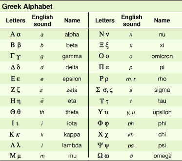

Greek Alphabets

The Greek alphabet derived from the North Semitic script in the 8th century BCE. The direction of writing in the oldest Greek inscriptions—as in the Semitic scripts—is from right to left, a style that was superseded by the boustrophedon (meaning, in Greek, “as the ox draws the plow”), in which lines run alternately from right to left and left to right. This change occurred approximately in the 6th century BCE. There are, however, some early Greek inscriptions written from left to right, and after 500 BCE Greek writing invariably proceeded from left to right.
The letters for b, g, d, z, k, l, m, n, p, r, and t, which are sounds common to the Semitic and Greek languages, were taken over without change. The principal Greek change arose in applying a script developed to represent a Semitic language, in which vowel sounds are of minor importance to the identity of a word, to a language in which such vowel differences are crucial to the identity of a word. In Greek, /kat/, /kit/, and /kot/ are entirely different words, while in Semitic languages they would be the same word in different grammatically inflected forms. The Greek addition of vowels to the alphabet to make it an analogue of the sound pattern produced a writing system that was both manageable and accurate. The different ways in which these adaptations were carried out allow the two main branches of the early Greek alphabet—the eastern and the western—to be distinguished. These again subdivided, each into secondary branches. Within this general grouping there were many local peculiarities, but the differences between all these local alphabets involved variations in detail rather than essential structure.
The eastern and western subdivisions were the two principal branches of the early Greek alphabet. The Ionic alphabet was the most important of the eastern variety, which also included the Greek alphabets of Asia Minor and the adjacent islands, of the Cyclades and Attica, of Sicyon and Argos, and of Megara, Corinth, and the Ionian colonies of Magna Graecia. A secondary branch of the eastern subdivision was made up of the alphabets used on the Dorian islands of Thera, Melos, and Crete. The alphabets of Euboea (Chalcidian), Boeotia, Phocis, Locris, Thessaly, the Peloponnesus (except its northeastern part), and of the non-Ionian colonies of Magna Graecia belonged to the western subdivision. It is a controversial point whether the eastern or the western branch was the earlier in time, whether there was any derivative link between one and the other, or whether they represent two quite independent adaptations of the Semitic alphabet. The latter alternative seems rather improbable.
Gradually, the Greek local alphabets became more and more similar. In 403 BCE the Ionic alphabet of Miletus was officially adopted in Athens and later also in the other states. By the middle of the 4th century BCE, almost all the local alphabets had been replaced by the Ionic, which became the common, Classical Greek alphabet of 24 letters.
After this time the development of the Greek alphabet was almost wholly external, in the direction of greater utility, convenience, and, above all, beauty. The Classical style was retained as a monumental script at the same time that more cursive forms grew up for writing on such surfaces as parchment, papyrus, and wax. The Classical letters were also retained as the capital letters in the modern print (though some of the capitals in modern Greek handwriting are borrowed from the Latin alphabet). On the other hand, the Classical Greek alphabet also evolved into the Greek uncials, the cursive, and the minuscule script. (Uncial letters were somewhat rounded and separated versions of capital letters or cursive forms; minuscule letters developed from cursive writing and have simplified, small forms.) Until about 800 CE the uncials were used as a book hand; later the minuscule script was employed for the same purpose. The cursive scripts evolved into the modern Greek minuscule.
In the middle of the 3rd century BCE, the Greek scholar Aristophanes of Byzantium introduced the three accents—acute, grave, and circumflex—that were thereafter used to assist students, particularly foreigners, in the correct pronunciation of Greek words; these continue to be used in most Greek texts printed today. Originally, these marks indicated tone or pitch, not stress.
Countless inscriptions have been discovered all over the Hellenic and Hellenistic world and beyond. They include official decrees, annals, codes of law, lists of citizens, civic rolls, temple accounts, votive offerings, ostraca (fragments of pottery), sepulchral inscriptions, coins, lettering on vases, and so forth. These, along with many thousands of Greek manuscripts, both ancient and medieval, serve as sources for the studies known as Greek epigraphy and Greek paleography and are of untold importance for all branches of ancient history, philology, philosophy, and other disciplines.
The most direct offshoots from the Greek alphabet were those adapted to the languages of the non-Hellenic peoples of western Asia Minor in the 1st millennium BCE: the scripts of the Lycians, Phrygians, Pamphylians, Lydians, and Carians. The first three of these were derived directly from the Greek; the Lydian and Carian were strongly influenced by it. The Coptic alphabet was the other non-European offshoot from the Greek and the only one used in Africa. Twenty-four of its 31 letters were borrowed from the Greek uncial writing, and seven were taken over from a particularly cursive variety of the Egyptian demotic writing; the demotic letters were used to express Coptic sounds not existing in the Greek language.